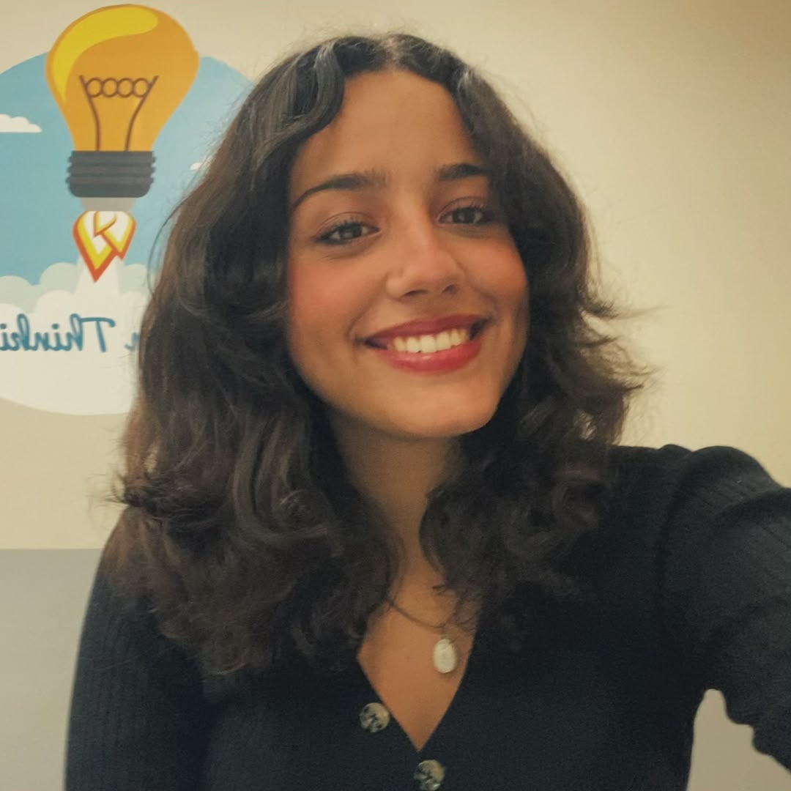
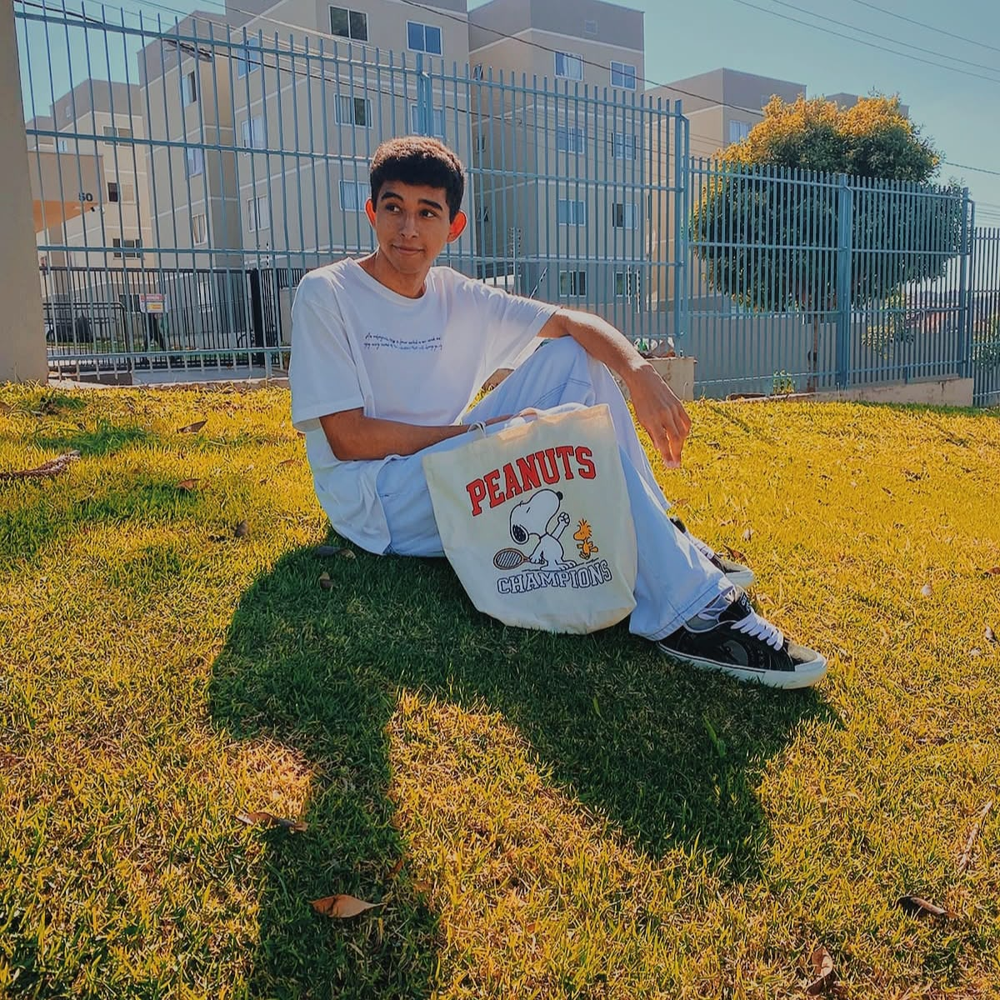
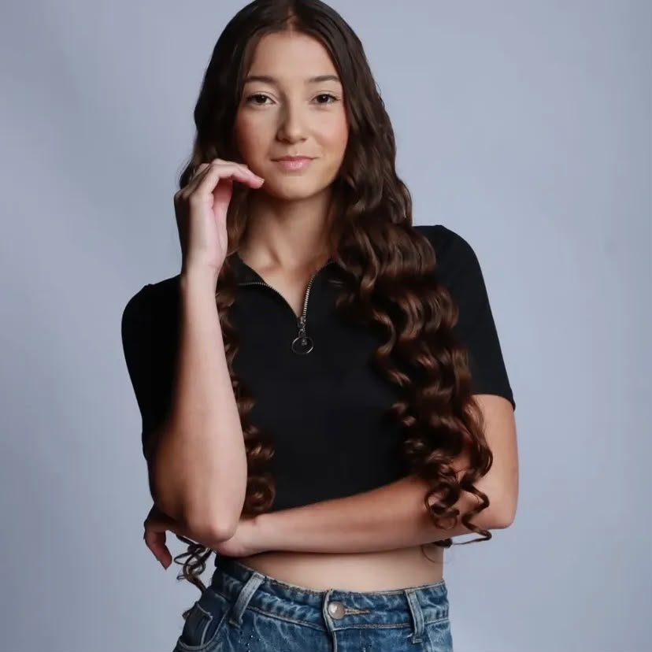

Isabelly dos Reis Santos
Desenvolvedora e idealizadora“Espero que o Projeto Marias alcance muitas mulheres e que, de alguma forma, possa ajudá-las a enxergar a força, a coragem e o potencial que sempre existiram dentro delas.”
Conheça a história, o propósito e as pessoas por trás do Projeto Marias.
Como nasceu o Projeto Marias
Tudo começou com uma proposta do nosso professor Symon: pesquisar mulheres marcantes e compartilhar suas histórias.
O que inicialmente parecia apenas uma atividade acadêmica despertou em nosso grupo um novo olhar sobre a importância de conhecer e valorizar histórias de mulheres que, com coragem e determinação, transformaram suas próprias vidas e inspiraram tantas outras.
Durante essa jornada, a história de Maria da Penha nos sensibilizou profundamente. Sua luta por justiça e pelo enfrentamento da violência contra a mulher nos fez compreender que ela representa muito mais do que um nome: representa a força de quem encontrou coragem para transformar a própria dor em esperança e mudança.
Foi dessa inspiração que surgiu o nome Marias.
Mais do que uma homenagem a Maria da Penha, Marias simboliza todas as mulheres. Cada Maria carrega uma história, uma luta, um sonho e uma voz que merece ser ouvida.
Este projeto nasce para reconhecer essas trajetórias, incentivar a conscientização e lembrar que, por trás de cada mulher, existe uma história que merece ser acolhida, respeitada e jamais esquecida.
O significado da borboleta
A logo do projeto “Marias” foi pensada como uma borboleta, símbolo de transformação, liberdade e delicadeza, representando a força e a feminilidade presentes em cada mulher.
Dentro dela, o nome “Marias” surge como essência e identidade, unindo todas essas histórias em um só significado.
Assim, a borboleta não é apenas uma forma visual, mas uma representação sensível de crescimento, resiliência e da liberdade de ser e existir.
O propósito do Projeto Marias
O Projeto Marias nos ensinou que reconhecer histórias também é um ato de transformação.
Ao dar visibilidade a mulheres que marcaram o mundo, esperamos inspirar reflexões, fortalecer vozes e lembrar que nenhuma história deve ser esquecida.
Pessoas que fizeram parte dessa jornada
Agradecemos a todos os professores que nos orientaram e apoiaram durante esta jornada, compartilhando conhecimento e incentivo em cada etapa.
Em especial, ao professor Symon, cuja proposta inspirou o nascimento do Projeto Marias. Sua iniciativa nos permitiu refletir, pesquisar e enxergar novas possibilidades, transformando aprendizado em propósito.
Também agradecemos a todos que contribuíram com ideias, pesquisas e experiências para a construção deste trabalho.
Por fim, nossa gratidão às mulheres que inspiraram este projeto. Àquelas que fizeram história, enfrentaram desafios e deixaram legados que continuam vivos.
Mesmo ausentes, suas vozes e conquistas seguem inspirando coragem, transformação e esperança.
Pessoas por trás do Projeto Marias

“Espero que o Projeto Marias alcance muitas mulheres e que, de alguma forma, possa ajudá-las a enxergar a força, a coragem e o potencial que sempre existiram dentro delas.”

“Espero que o Marias seja um espaço de acolhimento, informação e esperança, onde nenhuma mulher se sinta sozinha. Que dê voz às silenciadas e inspire um futuro de liberdade, respeito e segurança para todas.”

“Meu recado às mulheres: Contem suas histórias. Descubram o poder de milhões de vozes que foram caladas por séculos.”
“Que nenhuma mulher tenha sua história silenciada, e que o Marias seja uma voz quando ela precisar ser ouvida.”
— Projeto Marias